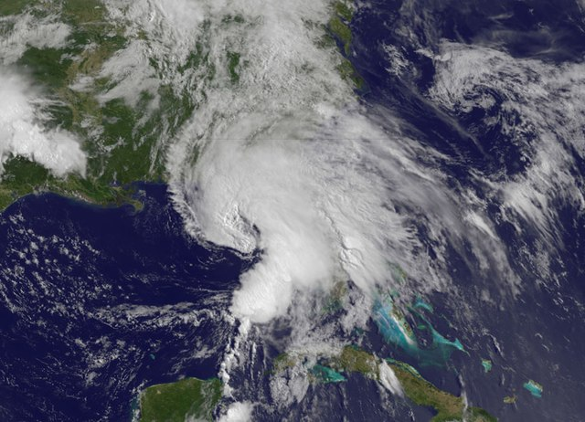
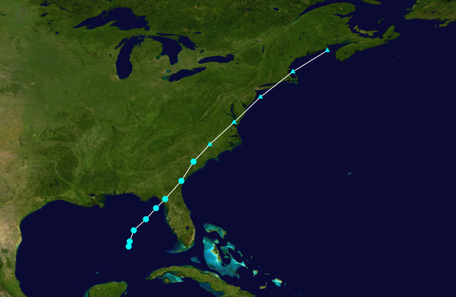

My interest in hurricanes started in 2013 with Tropical Storm Andrea, Andrea formed with the remants of Hurricane Barbara of the Pacific. Andrea affected the southeast with winds and rains also affecting where I lived, sparking my interest for hurricanes.
 